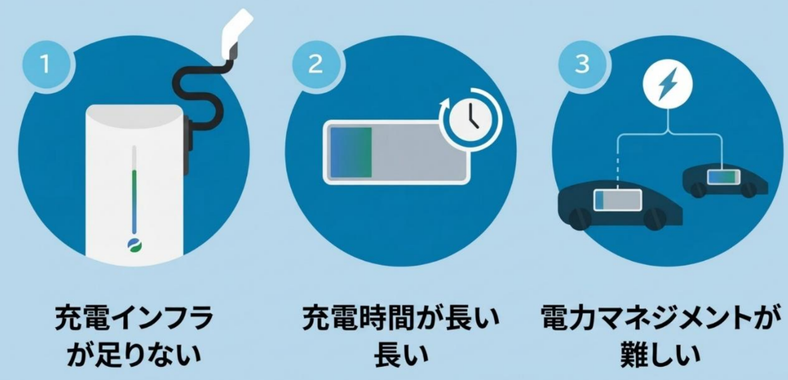
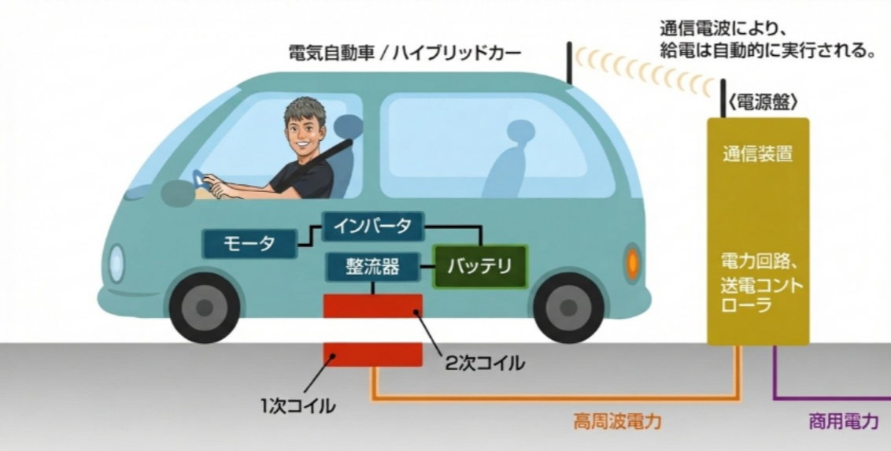

EV化を進めるうえでの3つの壁
EVへの移行は環境負荷の低減や次世代モビリティ社会につながると期待されています。一方で、普及に向けて解決したい充電の課題があります。

充電インフラが足りない
充電スタンドの数や設置場所が十分でないと、必要なときに充電しにくくなります。利用できる充電設備を広げていくことが課題です。
充電に時間がかかる
充電中は車を停車させる必要があり、充電時間が長いほど移動の計画にも影響します。
電力マネジメントが難しい
多くの車が同時に充電する場合、いつ、どれだけの電力を供給するかを調整する必要があります。
充電スタンドの整備はインフラ不足の改善につながります。さらに充電時間や電力管理にも対応する方法として、私たちは非接触充電に着目しました。
非接触充電の仕組み
スマートフォンのワイヤレス充電と同じように、コイルからコイルへ磁界を介して電力を伝えます。

磁界を介してコイルからコイルへ
道路側の一次コイルに電流を流すと磁界が発生します。車両側の二次コイルがその磁界を受け取り、電力を車載の回路を通してバッテリーへ送ります。コイル同士をケーブルでつなぐ必要はありません。
走りながら充電する未来へ
道路に給電装置を設置できれば、EVは走行しながら電力を受け取れるようになります。
充電のために停車する時間を減らす
走行中にも給電できれば、充電スタンドに立ち寄る回数や停車時間を減らせる可能性があります。充電インフラ不足や充電時間の課題を補う方法として期待されています。
電力を適切に制御する
給電するタイミングや電力量を調整できれば、電力マネジメントの負担を軽減できる可能性があります。実現には道路側の設備や効率的な電力供給など、検討すべき課題もあります。
展示では、コイルを使った非接触充電の仕組みを小型模型で紹介します。走行中にも電力を受け取る未来の技術をご覧ください。